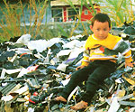

High-Tech Trash
Green Gazette
By the Mother Earth News editors
October/November 2003
Computer technology is advancing so fast that old hardware quickly becomes completely obsolete. The "e-waste" from this constantly evolving field is wreaking havoc on the environment, both here and abroad.
Computers contain toxic substances such as lead, cadmium, arsenic and mercury. Despite the danger of throwing these hazardous materials in a landfill, that's exactly where tons of computers end up. Americans reuse or recycle only about 10 percent of the 50 million computers they replace each year, according to ABC News. (Eighty percent is being stockpiled, which could create even bigger problems in the future, and the remaining 10 percent is landfilled.) Throwing e-waste in landfills creates a potential for toxic waste to leach into our soil and groundwater.
Because environmental standards for landfills are tougher in the United States than in many other countries, e-waste is often exported, especially to China, India and Pakistan. An estimated 50 percent to 80 percent of the millions of pounds of ewaste generated each year in the United States goes abroad for "recycling," according to a report called "Exporting Harm" from the Basel Action Network www.ban.org . The report says "recycling" practices in these countries often include open burning of plastic waste (which releases highly toxic dioxins), exposure to toxic solders and dumping acids into rivers.
Some countries are creating policies to combat the growing e-waste problem. In the Netherlands, you can bring your old computer to the retailer when buying a new one, and the retailer must by law accept it free of charge. Japan passed a law in 2001 requiring manufacturers to recycle certain parts.
In the United States, a movement called the Computer TakeBack Campaign (www.computertakeback.com ) is demanding manufacturers take more responsibility for disposing of old computers. California and Massachusetts recently banned certain computer parts in landfills, while Apple, IBM and HewlettPackard take back computers for about a $30 fee. Gateway is one step ahead: They will pay you $50 for recycling your old computer when you buy a new one from them. Lastly, many nonprofit programs accept used equipment, and services have popped up that distribute old computers to schools and charities. Check out www.ban.org/pledge/locations.html for computer reuse and recycling businesses. The Computer TakeBack Campaign also publishes a report card grading major computer companies on their environmental efforts at www.svtc.org/cleancc/pubs/2002report.htm.
Cell-ing Out
More than 1 million cellular phones are tossed out each week in the United States as customers upgrade or switch companies, according to the Sierra Club. Computer chips inside cell phones contain the same hazardous materials as computers: arsenic, mercury and lead. CollectiveGood, a cellular-phone recycling company, has partnered with Staples office supply stores to set up bins in Staples stores across the United States where people can drop off their old cell phones. Organizers expect at least half of the phones to be refurbished and resold; the rest will be recycled. CollectiveGood will donate a portion of the proceeds from the sale of used phones to the Sierra Club.
Nature by the Numbers
To an avid naturalist, placing a dollar value on nature may seem like the way we got into our environmental mess in the first place. But, figuring out how much nature is "worth" may be the best way to protect the planet, says Robert Costanza, director and founder of the Gund Institute for Ecological Economics at the University of Vermont. Costanza is a leading voice supporting "ecosystem valuation," which assigns a dollar value to the services ecosystems provide to humans, such as stabilizing climate, providing biodiversity, keeping air and water clean, and pollinating crops.
This process attempts to calculate all the costs-including the environmental impacts-into standard measures of economic success, like the gross domestic product (GDP), says Costanza. That way, policy-makers, businesspeople and environmentalists can speak the same language, and the environmental costs of a policy or development become clearer and more comparable.
In a paper published in the British Journal Nature, Costanza and his colleagues estimate the worth of the biosphere at $33 trillion per year, a figure greater than the annual GDP of all the world's economies combined. In a paper by Andrew Balmford published in Science, Costanza reports that investing in the preservation of intact ecosystems yields returns of 100 to 1, a far more profitable return than anything the Dow Jones could offer.
Costanza says he hopes placing a dollar value on nature can help us realize just how much our planet's natural resources are worth, before we lose some ecosystems forever. "In the past humans had lots of 'natural capital' in the form of natural resources," he says, "but we can't afford to waste this natural capital anymore without affecting the sustainability of humans on this planet."
For more information about ecosystem valuation, visit the Gund Institute for Ecological Economics' Web site at www.uvm.edu/giee .
The Drain Campaign
Aquatic ecosystems aren't the only ones paying the price of water pollution: Two-thirds of Americans get their drinking water from rivers, streams and lakes, according to the Environmental Protection Agency. Nutrient excesses and sediment destroy wildlife habitats, and pathogens end toxins entering our drinking water carry potential human health risks.
Storm water runoff dumps oil, bacteria road salt, sediment from development, fertilizers and pesticides into our waterways. Contaminants also come from household pollution (like people dumping chemicals down their drains). Educate your community by using storm drain stencils (available at www.earthwater-stencils.com ) to alert people that most drains flow direct to rivers and streams, and echo the warning that "we all live downstream," and all have a responsibility to keep our water clean. Check with your local authorities before stenciling.
Batteries Not Required
Americans use more than 2billion batteries each year, most of which end up in a landfill. You can break the cycle of throwing away batteries and take renewable energy to a new level with these appliances powered by manual, thermal and solar power.
Sunnier Tunes
Turning the crank on the Outrider crank- and solar-powered radio spins gears in a tiny transmission that drives an alternator. Thirty seconds of cranking powers the radio for half an hour. Perfect for camping, picnicking, or any other time you are soaking up the sun. $49. ( www.coleman.com )
Treading Light-ly
Shaking a Forever Flashlight from Excalibur electronics moves a magnet through a wire coil, generating electrical energy stored in a capacitor. This flashlight is great to keep in case of emergencies, and with no batteries or bulb to replace, the flashlight pays for itself. Thirty seconds of shaking provides about five minutes of light. $40. ( www.excaliburelectronics.com )
Crank Calling
Don't miss another phone call because you forgot to charge your cell phone. Crank the handle of Motorola's portable cell-phone charger for 45 seconds to gain two to five minutes of talk time or several hours of standby time. $50. ( www.motorola.com )
Move On Time
Use your body to stay on schedule. Simply wearing a Seiko kinetic watch provides enough motion to power its mechanism. When the watch is still, memory cells can keep time for seven to 14 days. $100. ( www.seikousa.com )
Sprouts & Snippets
Passing on the Family Farm. The American Farmland Trust (AFT) has released an updated version of Your Land is your Legacy: A Guide to Planning for the Future of Your Farm, which can help you pass your land on to the next generation. Managing a farm is tough, especially for relatives with little or no experience, and property taxes on the land may exceed its agricultural value. Both situations could result in a forced sale of the land, which is why early planning for the transfer of your land is essential, says Robyn Miller, AFT media manager. For more information, visit www.farmland.org/news_2003/061203 natl.htm .
Shout It Out. Make a statement with a custom-made bumper sticker from www.bumperactive.com . A sticker costs $4.50, and site managers will add your creation to their catalog for others to buy. You earn $1 for each sticker sold, which you can choose to k eep or donate to charity.
Later, 'Tater? The Japanese government took a step toward approving the sale of Genetically Modified (GM) potatoes. The Japanese Ministry of Health, Labor and Welfare announced the 'New Leaf Y' variant, a GM strain developed by Monsanto to be more pest- and virus-resistant, has passed a preliminary food safety review, the National Potato Council reports.
U.S. potato processors currently are required to test for GM potatoes in products exported to Japan, but the approval of GM potatoes by the Japanese could end that testing.
For more information about the harmful effects of GM foods, visit the Ag Biotech InfoNet at www.biotechinfo.net . For tips on voicing your opinion, go to www.thecampaign.org .
Another Way to Say "O"
A new certification program called Certified Naturally Grown (CNG) is taking root as an option for farmers who may not have the resources to enroll in the U.S. Department of Agriculture's (USDA) Organic Certification program, which requires farmers to document their farm operation with heaps of paperwork. CNG targets small, diversified farmers who distribute locally through farmer's markets, farm stands, community-supported agriculture, restaurants and small grocery stores.
The CNG program differs from the USDA organic certification program in several ways, says CNG executive director Ron Khosla. CNG-enrolled farms are inspected once each year, with no cost to the farmer. "A large part of the USDA certification relies solely on the word of the farmer," Khosla says. "Our program involves farmers inspecting other farmers, because nobody knows more about what goes on at a farm than neighboring farmers."
CNG also is developing an online forum where farmers and inspectors can exchange advice about organic farming. (The USDA program prohibits certifiers from advising farmers.) "Even though organic farming is an ancient practice, it's still new to us on a commercial level," Khosla says. "Our program encourages the sharing of information."
Perhaps the biggest difference for the consumer between CNG and the USDA label is that CNG randomly tests produce for pesticide residue, while the USDA does not.
About a hundred growers have entered the program, and Khosla says he expects more to join before next year's growing season gets under way.
Lynn Bycrynski, editor of the Growing for Market newsletter, says CNG "is not a close substitute for organic certification, but it does address the needs of the original organic farmers-small-scale, diversified family farms that simply don't have the time or money to comply with the complicated and time-consuming USDA rules."
Enrollment in CNG is free, but a $20 to $100 donation is encouraged. For more information, visit www.naturallygrown.org.
Green Gazette is written by Lindsey Hodel.
Mother Earth News
|
 Becky Heavner A child in Guiyu, China, sits atop one of countless piles of recyclable computer waste imported from around the world. |
 George Retseck Sixty-six percent of Americans get their drinking water from surface water sources, often polluted by storm drain runoff. |
|
|
|
|
|